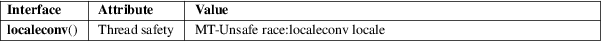

localeconv − get numeric formatting information
Standard C library (libc, −lc)
#include <locale.h>
struct lconv *localeconv(void);
The localeconv() function returns a pointer to a struct lconv for the current locale. This structure is shown in locale(7), and contains all values associated with the locale categories LC_NUMERIC and LC_MONETARY. Programs may also use the functions printf(3) and strfmon(3), which behave according to the actual locale in use.
The localeconv() function returns a pointer to a filled in struct lconv. This structure may be (in glibc, is) statically allocated, and may be overwritten by subsequent calls. According to POSIX, the caller should not modify the contents of this structure. The localeconv() function always succeeds.
For an explanation of the terms used in this section, see attributes(7).

C11.
C89.
The printf(3) family of functions may or may not honor the current locale.
locale(1), localedef(1), isalpha(3), nl_langinfo(3), setlocale(3), strcoll(3), strftime(3), locale(7)